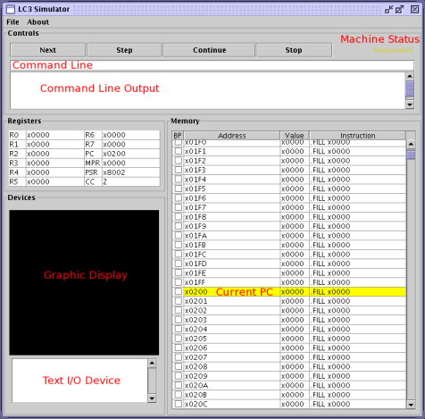

Throughout this document, commands that you have to type or buttons you have to click will appear like so.
PennSim is written in Java, which means Java must be installed on the computer you plan to use. Java should already be available on all public SEAS machines. If you plan to work on your personal machine, you may need to install Java yourself. You can download Java here. PennSim requires Java 1.5 or newer (which is available for Windows, Linux, and Mac OS X).
Next, you need to download the simulator. It is distributed in a .jar file (short for Java ARchive). In Windows or on a Mac, you should be able to double-click the .jar file to launch the simulator. You can also launch the simulator from the command line of your operating system (such as Linux) by using the command java -jar (jarfile). You should see the simulator screen, much like the screenshot below. To run it from the Linux labs, type the following command:
/usr/java/jdk1.5.0/bin/java -jar ~cse240/public/PennSim.jar
If you have any problems starting the simulator, please post your problems to the CSE240 discussion forum. This will ensure the fastest response.
We will not be distributing the source to the simulator, because a later assignment will build parts of the simulator in C (which is similar to Java in many ways).
Now the simulator is running, but to get it to do anything interesting, we need to load some software. The first piece of software we should load is, naturally, an operating system. The LC-3 operating system is very basic: it handles simple I/O operations and is responsible for starting other programs, such as the ones you'll write for this homework. Download the LC-3 OS here.
So that you can understand what the operating system does, we distribute it as an assembly language file. But the machine doesn't understand assembly directly; we first have to 'assemble' the assembly code into machine language (a .obj file containing binary data). PennSim has a built-in assembler, accessible (as is the case for most of its functionality) via the Command Line text box (see screenshot above). To assemble the operating system, type as lc3os.asm at PennSim's command line and hit enter. Make sure that the OS file is in the current directory; the as command also understands relative and absolute paths if the OS is in a different directory. Output from the assembly process is displayed in the CommandLine Output Pane. After assembling the OS, you should notice that 2 new files, lc3os.obj and lc3os.sym, have been created. The .obj file is the machine language encoding of the assembly language file, and the .sym file is a text file that holds symbol information so the simulator can display your symbols. Recall that symbols are really just a convenience for silly humans; the machine language encoding knows only about offsets.
Now we can load the lc3os.obj file into the simulator, either via the command load lc3os.obj or by going to the File menu and selecting Open .obj file. Notice that the contents of the memory change when the OS is loaded.
Now assemble and load the solution file for Problem 0 into the simulator. The memory has changed again, but you may not notice since the relevant memory addresses (starting at x3000) aren't visible unless you've scrolled the screen. User-level programs (i.e., non-OS code) start, by convention, at x3000. If you type the command list x3000 the memory view will jump to x3000 and you can see the 1-instruction solution to this problem.
To actually run code, you can use the 4 control buttons at the top of the simulator, or type commands into the command line interface (the command names are the same as the buttons). Note that the PC register is set to x0200, which is the entry point to the operating system by convention. Recall that the solution code for Problem 0 increments the value in R2 and puts the result in R5. Set the value in R2 to something you fancy, either by double-clicking it in the Registers section, or via the command set R2 (value). Now, actually run the code by hitting the continue button. The value magically gets incremented and moved to R5. Neat-o! Also observe that the PC now points to x0263, an apparently random value somewhere in the operating system, and that the Status Display tells us the machine is halted.
Clearly, some things are going on here. But to determine what they are exactly, we need to slow the execution down. You can hit the stop button to pause the machine while it's executing, but this doesn't give you very fine-grained control. The continue command will start running instructions as fast as possible, but often we want to go just one instruction at a time. This is what the next and step commands allow us to do. They both go one instruction at a time, but the step command will "follow" function calls and traps, while next just goes from line to line, "over" function calls and traps and stopping only at the instruction immediately after them. Both next and step will "follow" branches. The PennSim Manual has a more involved discussion, with an example, of the difference between next and step.
Let's try running the program again, but just one instruction at a time. Notice that from the halted state, the PC points to an instruction that will branch us right back to the start of the operating system. So we can hit next once and start the cycle over again. Note that registers are as we left them. You can put a new value into R2 if you want, and the old value in R5 will get overwritten. Sometimes, having old values lying around everywhere can be problematic, and it's good to do a real "reboot" via the reset command. This clears all of memory and resets registers to default values, so you have to reload the OS and your program.
You can keep next-ing over the OS code; eventually you will hit the RTT instruction at location x0205 that jumps to the start of our program at x3000. Now you can see the 2 instructions that constitute our program. You can see the ADD being performed, and then the machine gets halted again.
Continue running the increment-R2-into-R5 code until, if ever, you get bored. Then move on to Problem 1.
Going one instruction at a time is great, but somewhat tedious. We need a happy medium between not knowing what's going on at all, and having to go through every single instruction, whether we care about it or not. Breakpoints are this happy medium.
A breakpoint is set at a particular memory location, and tells the simulator to stop execution upon reaching that point. Memory locations with breakpoints set on them show up in the simulator with a red square in the "BP" column. It is left as an exercise to the reader to determine what "BP" stands for. You can set a breakpoint at a memory location with the command break set (memory location), or by checking the checkbox in the "BP" column. You can get rid of a previously-set breakpoint with the command break clear (memory location), or by un-checking a previously checked box. You can also set and clear breakpoints at labels, instead of specifying a hex memory location.
When you tell the simulator to continue, it will only run until it hits a breakpoint (or the system halts or has an error). When you are writing and testing your answer for Problem 1, you can use the command breakpoint set START to set a breakpoint at the beginning of your code. Then, you can use continue to skip all the OS code and get to the instructions you care about. Then you can next over your code to make sure it's doing what you want it to do.
Now try running some of the test scripts that we've provided for Problem 1. You can do this with the command script (scriptfile). The script files just plain text (and the file extension doesn't really matter). If you open the script file with a text editor, you can see that the script commands are the same as those you type at the command line. For repetitive tasks, using a script file can save you time, and perhaps the lifelong agony of Repetitive Strain Injury.
Scripting is also a great way of testing your code. You can write a few test cases and check your code easily, especially for the problems in this homework which are pretty easy to test. Use the check command to verify that a value is what you think it should be. We've distributed a few test scripts for the problems in this homework, but they don't cover all the important cases, so you should augment our scripts with some of your own.
This document doesn't cover all of the simulator's functionality; for an extended discussion of usage see the PennSim Manual. For quick help within the simulator itself, you can use the help command to see a list of all of PennSim's commands. Use help (command) to get help on a specific command.
Many of the PennSim commands have shortcuts - b is short for break, n for next, and so forth. Use the help (or h) command to see what shortcuts exist.
The PennSim Command Line has a history feature - use the up and down arrow keys to go backwards and forwards through the commands you've previously entered.
If you resize the simulator window to make it bigger, the Commandline Output Pane will grow. If you have a small screen and the Commandline Output Pane still isn't big enough, you can open an external, resizable Command Output Window by selecting the Open Command Output Window option from the File menu. This lets you see a lot more output from the commands you run, and is particularly useful for viewing the errors the assembler generates.
If you have trouble running the simulator, try checking the class forum in case someone else has had the same problem as you. Posting your questions to the forum is a good idea in general, because then other people can learn from your experience. The forum is checked regularly by Professor Lewis and the TAs. Of course, you can also email cse240@seas, or drop by office hours.
If you think you've found a bug in the simulator (which is, theoretically speaking, a possibility:), check the Simulator distribution/bugs page to see if you've found a known bug with a workaround. If you've found a new bug, post to the forums (if you want to embarrass us) or email cse240@seas (if you're feeling kinder). Be sure to include the following: